I nostri risultati.
I numeri non mentono.
Ogni dato in questa pagina è pubblico e verificabile con strumenti di analisi di terze parti. Perché il modo migliore per dimostrare che i social funzionano è mostrarti quelli che gestiamo noi.
Crescita costruita, non comprata.
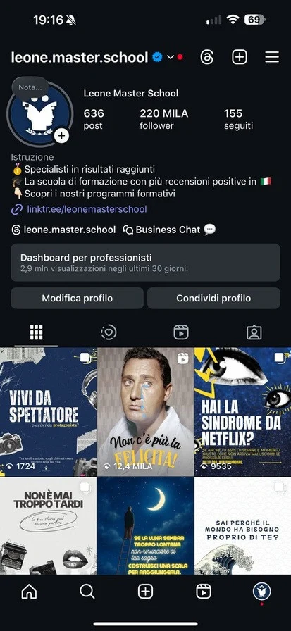
FormazioneLeone Master School — la scuola di formazione con più recensioni positive in Italia: 2,9 milioni di visualizzazioni negli ultimi 30 giorni.
Leonardo Leone — il profilo personale di un imprenditore trasformato in un canale di autorevolezza e acquisizione.
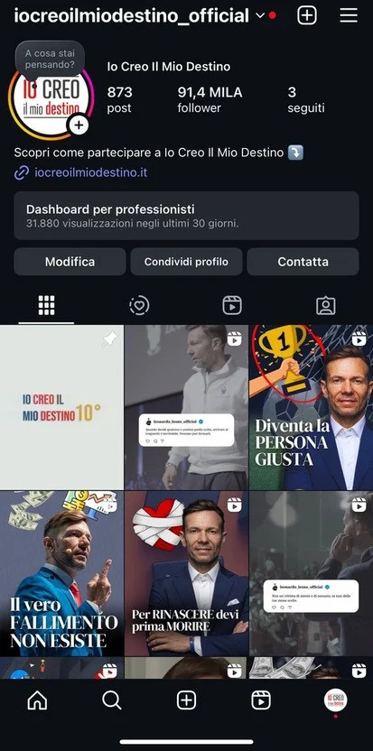
Eventi & CommunityIo Creo Il Mio Destino — la community di un percorso formativo, alimentata con contenuti costanti e riconoscibili.
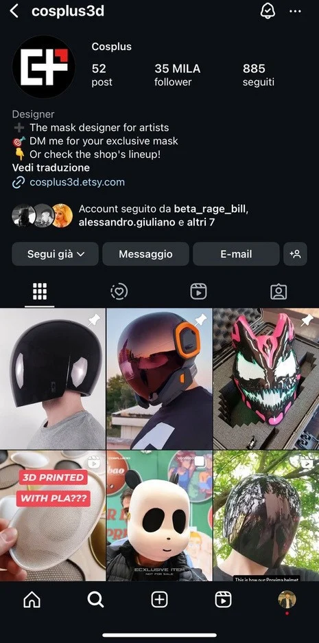
Design & E-commerceCosplus3D — designer di maschere per artisti: 42.000 follower costruiti con contenuti riconoscibili.
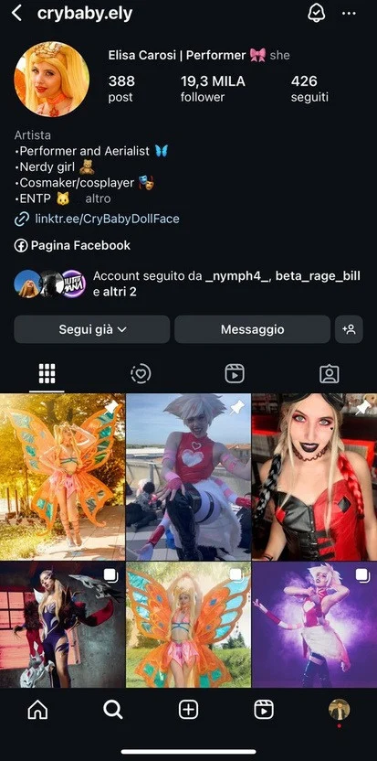
Artist & PerformerCrybaby.ely — performer e cosplayer: community da 19.300 follower attivi.
 Gaming & Creator
Gaming & Creator
Out Of Mana — collettivo di creator: un singolo reel da 7,1 milioni di visualizzazioni organiche.
Risultati a 10 giorni dall'avvio.
Anche i profili appena aperti, con il metodo giusto, partono forte fin dalle prime settimane.
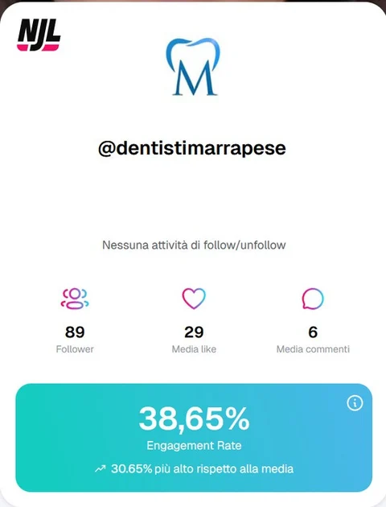
Studio DentisticoDentisti Marrapese — profilo aperto da zero, community avviata e attiva in meno di dieci giorni. Oggi su TikTok con video da centinaia di migliaia di visualizzazioni.
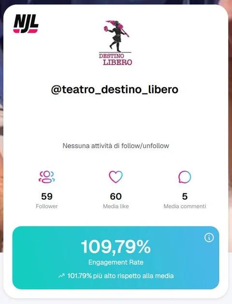
TeatroTeatro Destino Libero — dal profilo vuoto a una platea coinvolta in meno di due settimane.
Reels che hanno fatto milioni.
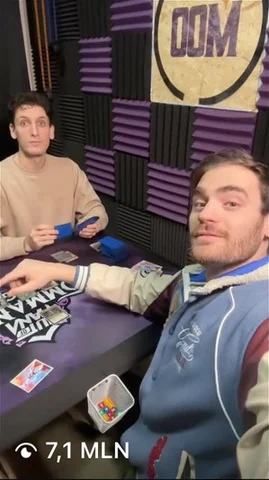
Out Of Mana — guarda su Instagram
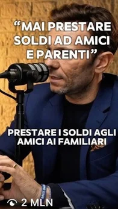
Leonardo Leone — guarda su Instagram
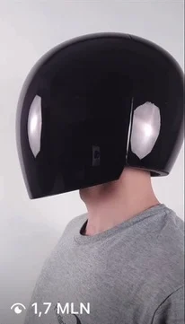
Cosplus3D — guarda su Instagram
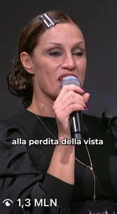
Annalisa Minetti per Leone Master School
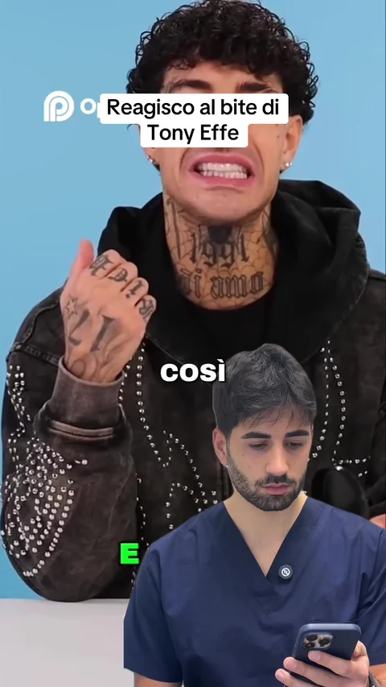
Dentisti Marrapese — guarda su TikTok
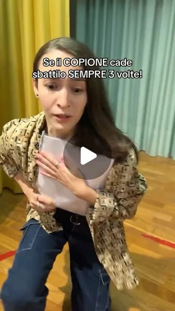
Teatro Destino Libero — guarda su Instagram
Follower e visualizzazioni sono dati pubblici, verificabili direttamente sui profili.
I nuovi avvii.
Sorriso Bistrot
Un bistrot che si racconta ogni giorno: contenuti food e sala che portano le persone al tavolo.
SP Motors
Concessionaria a Roma: storytelling di auto e motori, su Instagram e TikTok.
La Compagnia Degli Anelli
La voce è il prodotto: contenuti che fanno sentire — letteralmente — la qualità della scuola.
Luca Monti — Ironman
La disciplina di un atleta Ironman raccontata giorno per giorno: un personal brand che ispira e aggrega.
Il prossimo caso studio potrebbe essere il tuo.
Fai il Social Check-up: in 2 minuti scopri il potenziale del tuo business e ricevi i primi consigli concreti.